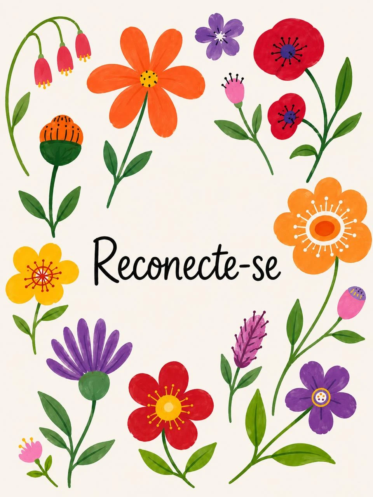
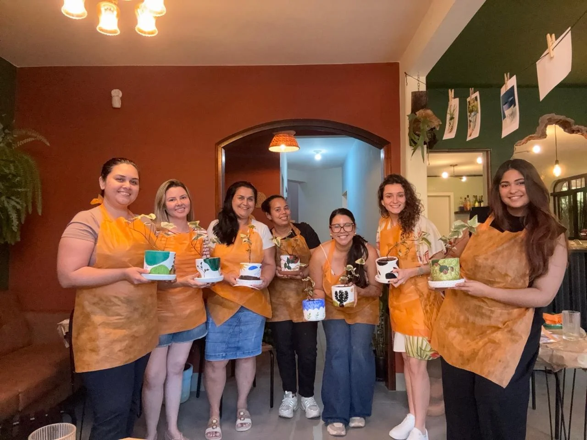
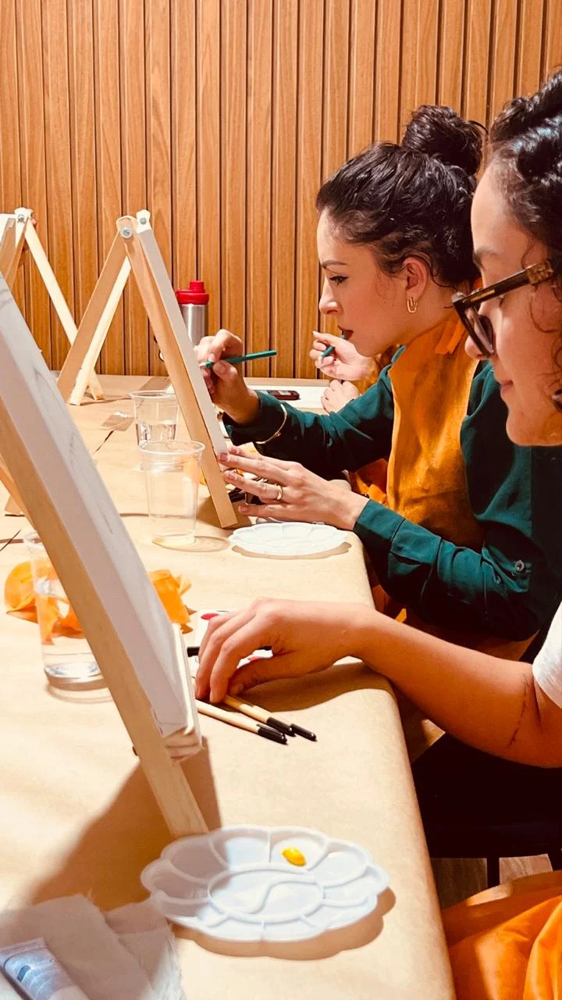
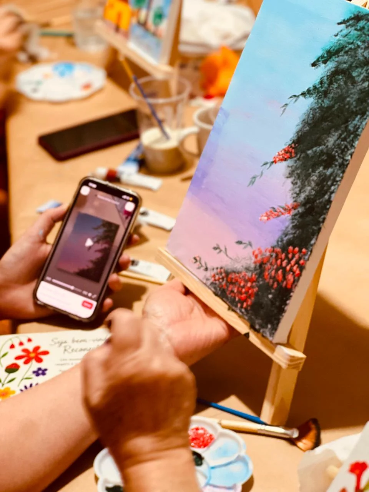
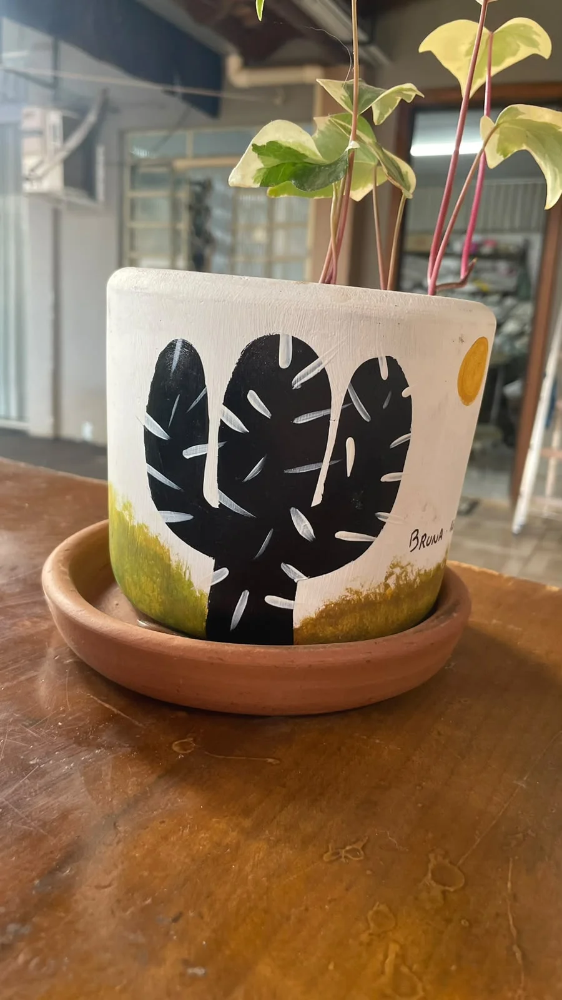
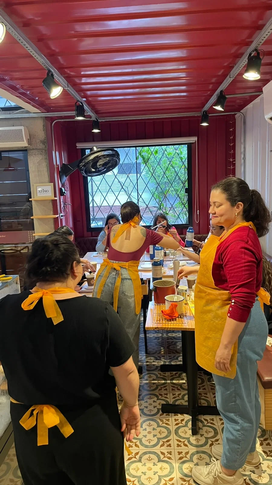
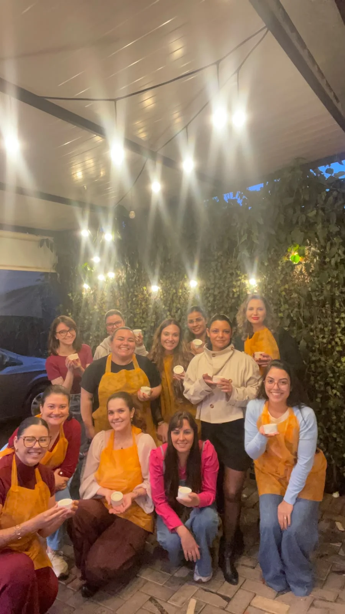
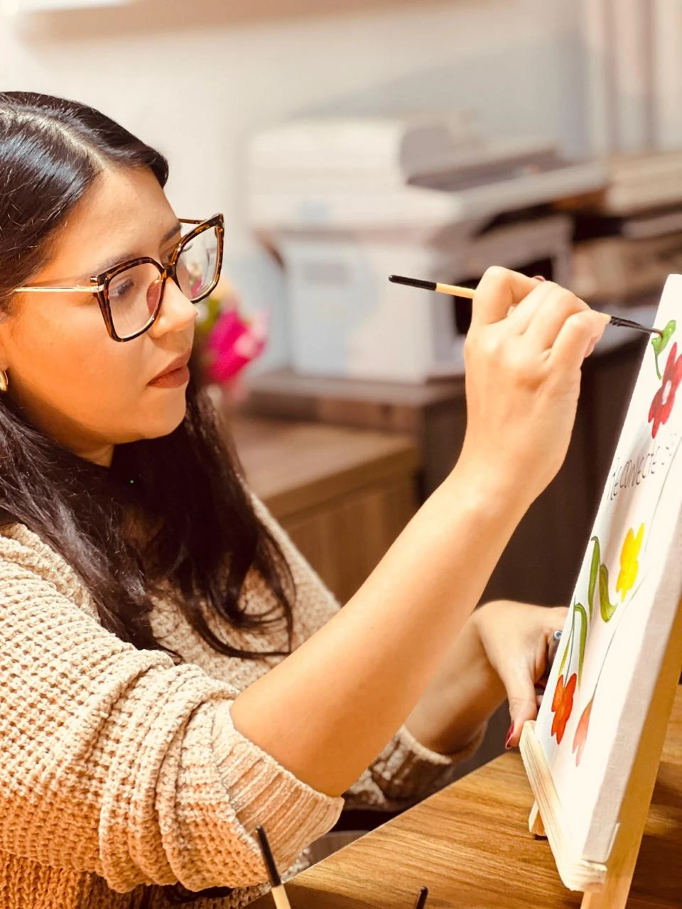

ARTES · MOVIMENTOS · CONEXÕES
ClubeReconecte-se
Seu clube de vivências terapêuticas,
com artes e movimentos
Criar com as mãos, movimentar o corpo, conhecer outras mulheres e compartilhar bons momentos.
Um convite para desacelerar, sair do automático e abrir espaço para você na sua rotina.
Quero receber os próximos convites ↗Conhecer a comunidade ↗

Um tempo seu.Boas companhias.
UM CLUBE PARA MULHERES
O que é o Reconecte-se?
Um clube de vivências terapêuticas que reúne mulheres em encontros com artes, movimentos e boas conversas.
A cada edição, uma experiência diferente: pintar, criar com as mãos, movimentar o corpo e conhecer outras mulheres. Um espaço para sair da rotina, se reconectar consigo mesma e construir novas amizades.
Os encontros têm inscrições próprias. Entre uma vivência e outra, seguimos próximas na comunidade gratuita do WhatsApp.

O prazer de experimentar.MENOS AUTOMÁTICO. MAIS PRESENÇA.
Reconecte-se e crie conexões.
Experimente algo diferente.
Uma tela em branco, um vaso para pintar, uma vela feita por você. Entre uma descoberta e outra, surgem conversas, risadas e novas conexões.
O Reconecte-se reúne mulheres em experiências com arte, movimento e convivência. Cada encontro traz uma proposta para aproveitar o momento e reservar um tempo para si.
Você pode vir sozinha. Não precisa ter experiência com a atividade nem saber fazer antes de chegar.
Só precisa se permitir começar.
UM POUCO DO QUE JÁ VIVEMOS
O Reconecte-se já ganhou
vida em encontros…
De pintura em tela, pintura em vasos e criação de velas. Momentos para experimentar, compartilhar e levar para casa algo feito pelas próprias mãos.



E ainda há muito para vivermos juntas.
Quero receber os próximos convites ↗Veja mais momentos dos encontros ＋
A EXPERIÊNCIA, POR QUEM VIVEU
Quem viveu,
conta.
Conheça a experiência de quem já participou do Reconecte-se.
Dê o play e escute esse relato. ↗
COMUNIDADE RECONECTE-SE | MULHER
A conexão continua
entre os encontros.
Um grupo gratuito no WhatsApp para continuarmos próximas, trocar ideias e apoiar umas às outras nesse caminho de reconexão.
- Trocas de ideias e experiências entre mulheres.
- Inspirações e pequenas pausas para o cotidiano.
- Novidades e convites para os próximos encontros.
Converse, compartilhe ou apenas acompanhe.
Você participa no seu ritmo.
Você não precisa ter participado de um encontro para fazer parte.

Um espaço que
cuidamos juntas.
Este é um espaço de convivência, troca e apoio entre mulheres. Não substitui o acompanhamento psicológico. Se você sentir que precisa de ajuda, procure uma profissional de saúde mental para receber o cuidado adequado.
EM CONSTRUÇÃO
Grupo Terapêutico Online
Reconecte-se
Um espaço terapêutico em grupo para mulheres se reconectarem está nascendo, com encontros focais e uma proposta própria de cuidado.
Em breve, compartilharei os objetivos, o formato e as condições de participação.
Quero receber informações ↗Registrar interesse não representa inscrição, garantia de vaga ou compromisso de contratação. O grupo terapêutico será independente da comunidade no WhatsApp e das oficinas.

Criar também é se encontrar.QUEM CRIOU ESSE ESPAÇO
Oi, eu sou a Bruna.
Sou Bruna Britto, Psicóloga de Mulheres e criadora do Reconecte-se.
Criei o projeto com o desejo de abrir espaço para experiências que muitas vezes ficam para depois: fazer algo por prazer, conhecer pessoas, experimentar uma atividade e estar presente naquele momento.
O Reconecte-se reúne esse desejo em encontros entre mulheres, com criatividade, convivência e novas possibilidades a cada edição.
Organizo as experiências e conto com parceiras conforme a proposta de cada encontro. Você sempre encontrará as informações sobre a atividade e quem vai conduzi-la antes de se inscrever.
@psicologabrunabritto ↗Criadora do Reconecte-se
Ficou com
alguma dúvida?
Clique aqui e veja as dúvidas mais frequentes ↗ESSE CONVITE TAMBÉM É SEU
Vamos viver os
próximos capítulos
juntas?
Deixe seu contato para receber os próximos convites e novidades do clube.
Pronto, recebemos seu interesse! 💛
Você receberá os próximos convites e novidades do Reconecte-se. Se marcou interesse no grupo terapêutico, também receberá informações quando a proposta estiver pronta.
Se quiser se aproximar desde já, conheça a Comunidade Reconecte-se | Mulher.
Conhecer a comunidade ↗